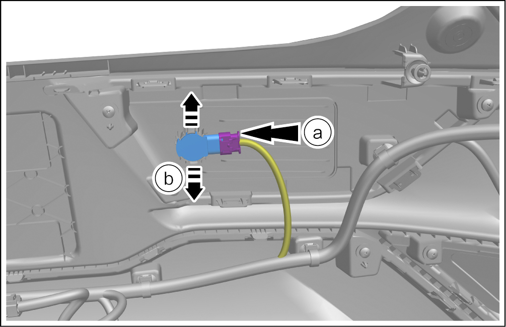

Rear Small Probe - Removal and Installation
Removal

There are 4 rear small probes, and the removal and installation steps are the same.
-
Remove the rear bumper assembly. See Rear Bumper Assembly - Removal and Installation
-
Remove the rear small probe.
-
Disconnect 1 connectors.
-
Detach the fixing clip in the direction of the arrow, and take out the rear small probe.
 -
Install
-
The installation is performed in reverse order of removal.